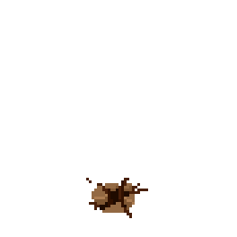
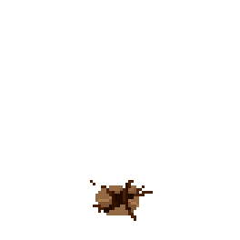
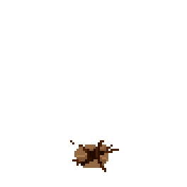
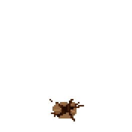

En los antiguos manuscritos sobre el Grande del Norte se habla de un poder sin lÃmite: el Alto Trono del Viento.
Cuando el trono alza su cetro, la serpiente plateada se desliza hacia el sur. Tres veces al año, la rueda celeste murmura. El Primero llega con los tambores ocultos bajo la tierra, cuando los que duermen en raÃces despiertan, y los montes, envueltos en manto esmeralda, se alzan como guardianes. El Segundo se presenta como un respiro en medio de la tempestad, inesperado, como si el ojo de fuego quisiera recordar su reinado.
El Tercero desciende con paso firme y silbido constante; su andar levanta hojas, zarandea las almas y marca el inicio de la escasez. Decidme, viajera: ¿Qué une a estos tres momentos en los que la rueda celeste cambia?

 


🎉 ¡Felicidades, Lucero! 🎉
Has resuelto el acertijo con éxito.
¡Eres increÃble! 🌟